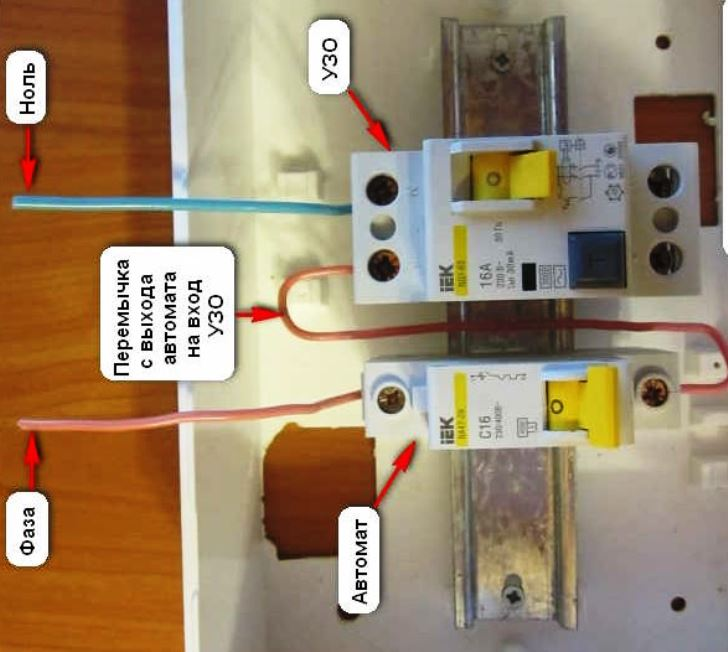
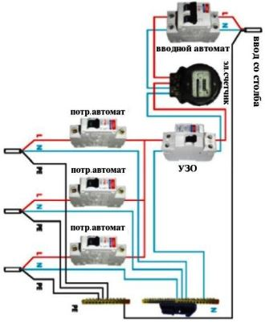

Качественный электромонтаж, Стаж 12 лет. Частный электрик, недорого.
Телефон - 8 904 642 08 57 Николай.

Установка узо.
в СПБ не так давно стала популярна установка УЗО. Зарубежьем наличие этого прибора в доме уже давно является обязательным требованием. Но в нашей стране лишь профессиональные электромонтажники занимаются инсталляцией УЗО. Если вы хотите обезопасить дом от различных сбоев, возможных возгораний из-за электрических сетей и короткого замыкания, то пригласите квалифицированного специалиста, который быстро и качественно произведет установку данного УЗО.
Сколько стоит установить узо.
Цена монтажа от 500 руб.
Хотя УЗО и не является противопожарным устройством, в деревянном доме, оно может стать главным защитным устройством, которое сократит риск возникновения пожара. Но главным предназначением прибора является защита человека от поражения электрическим током. Подобные угрозы могут возникнуть, если повреждена изоляция токоведущих частей. Вследствие этого возникает утечка дифференциального тока, но УЗО быстро прерывает цепь электрического потока, тем самым предотвращая возможный несчастный случай. В современных квартирных домах он может быть уже в комплекте электрощитов. Лучше приобретать отдельный вариант для квартиры, поскольку в ином случае отключение происходить только в опасном участке, а не во всей цепи.
На самом деле в работе УЗО нет ничего не обычного.
По сути, оно является коммутационным устройством и, если по определенным причинам дифференциальный ток превышает указанное значение, исполнительные элементы размыкают контакты. Достигается это за счет контроля тока, который прослеживает его движение по нулевому рабочему проводу и проводнику фазы. Если дефектов нет, то эти токи будут иметь одинаковые значения. Но когда появляется утечка электричества (например, контакт человека с оголенным проводом) и эта утечка заметно превышает норму, то устройство защитного отключения начинает реагировать и размыкает цепь. При этом скорость работы устройства настолько высока, что человек остается невредимым.

На данный момент установка УЗО является самой востребованной услугой, которой заинтересованы не только частные пользователи, но и крупнейшие строительные корпорации. Перед тем как вызвать мастера, пользователь должен быть уверен в правильности выбора, а для этого нужно учесть эксплуатационные параметры и характеристики данного прибора.
Электротехническая промышленность производит различного типа УЗО, но все они имеют одно номинальное значения дифференциального тока, при котором срабатывает УЗО. Также следует учесть класс устройства. Например, для жилых домов используется УЗО класса «АС». К тому же данная категория приборов отличается дешевой стоимостью. Но все понимают, что на безопасности экономить нельзя, поэтому профессиональные электромонтажники рекомендуют использовать УЗО из класса «А», так как его можно использовать для различного вида тока. Что касается конструкций, то УЗО может быть электромеханическим и электронным. Первые стоят дороже, поскольку они могут работать без питания, а вот вторые основаны на электронной схеме, которая требует электроэнергии.
Как установить узо самостоятельно.
Если вы планируете приобрести и установить установка узо, то желательно руководствоваться следующими рекомендациями:
- Выбирая прибор, учтите, что нагрузка тока должна быть 0,3 мА на 1А и на 1 метр проводника 10 мкА. Суммарный ток утечки в штатном режиме работы не должен превышать 1/3 номинального тока;
- Правильно функционирующий УЗО сохраняет свои рабочие параметры в течение пяти секунд, если падении напряжения в сети доходит до половины от номинального значения;
- Лучше всего выбирать модели, которые поддерживают систему автоматического выключения. Такой дополнительный механизм обеспечит защиту от сверхтока;
- Устанавливать данный прибор рекомендуется в сетях, где применены штепсельные розетки;
- Обязательно нужно учитывать требования инсталляции подобных устройств. Так как они определяют тип материала, из которого должны быть сделаны жилы, соединяемых кабелей и проводов.
Также стоит отметить, что при наличии в вашей квартире старой проводки, инсталляции УЗО становится нецелесообразной, поскольку это может стать причиной череды проблем, которые связаны со свойствами защитного механизма прибора. В таком случае вам потребуется провести электромонтажные работы по замене проводки или вы можете воспользоваться более быстрым вариантом, установкой розеток со встроенными УЗО. Конечно, стоимость такой розетки высока, но устанавливаются они всего за пару минут.
Существуют и модели накладного типа, которые не требуют монтажа, а просто прикладываются в виде дополнительного модуля к существующей электрической точке. Подобная конструкция обеспечивает высокую надежность и избавит вас от лишних проблем с монтажом, однако не рекомендуется производить установку розеточных модулей ОЗУ без помощи электрика, так как даже в этом деле требуются специфические знания и инструменты для тестирования работы.
 Поменять проводку в квартире.
Поменять проводку в квартире. Сделать электрику в квартире.
Расценки на электропроводку квартир.

Провести электропроводку в новостройке.
Электромонтаж в частном доме.
Электрика в загородном доме.
Сколько стоит замена электропроводки в двухкомнатной квартире?.
Сколько стоит проложить проводку в 3 ком квартире?
Сколько стоит сделать внутреннюю проводку?
Стоимость штробление стен.
Электромонтаж двухкомнатной квартиры.
Замена электропроводки в панельном доме.
Электромонтаж проводов в бане.